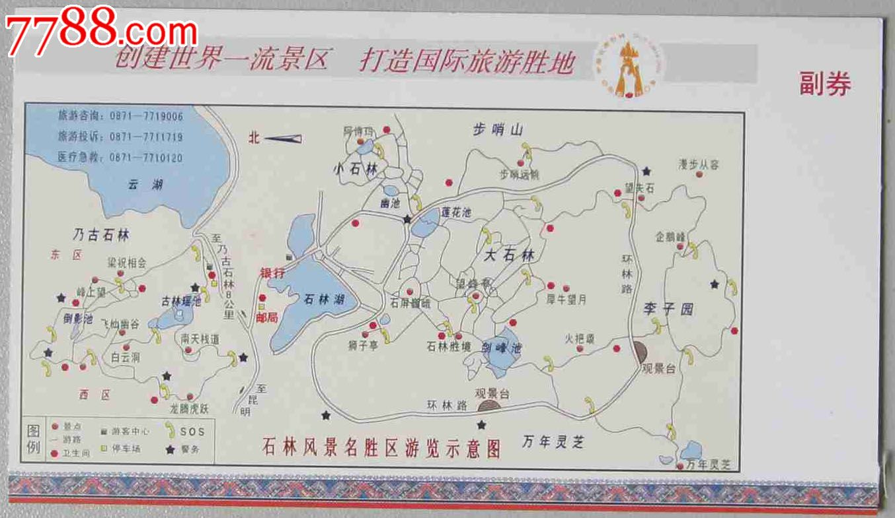
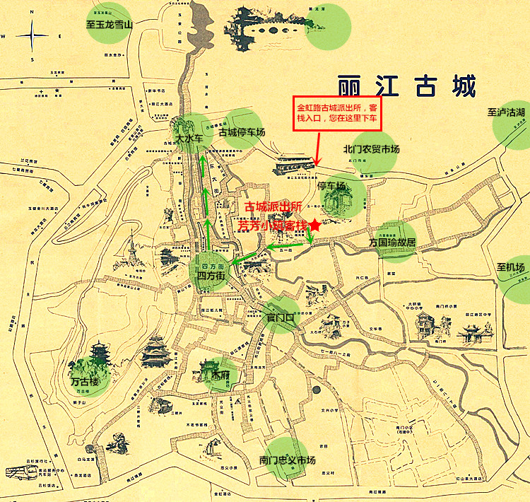
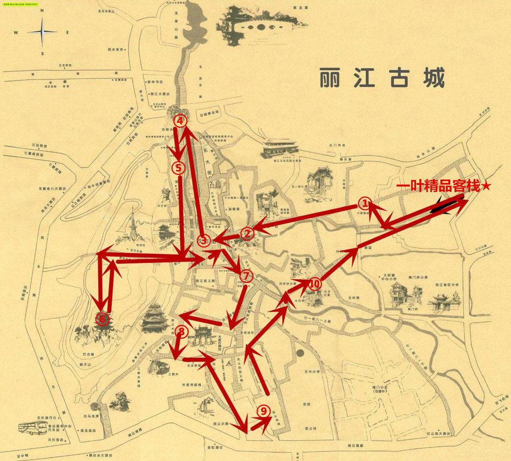
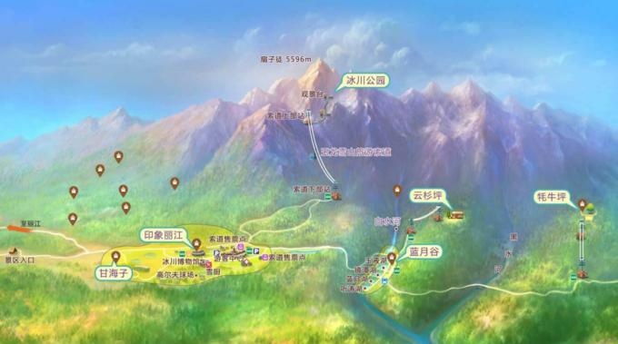

| 日期 | 路线 | 景点 | 备注 |
|---|---|---|---|
| 第一天 | 太原 → 昆明 | 休息调整 | -- |
| 第二天 | 昆明 → 大理 |
【大石林】 【小石林】 【步哨山】 【李子园箐】 【万年灵芝】 【乃古石林】 【崇圣寺三塔】 【大理古城】 |
石林门票：130 元 / 人 【石林示例图(3)】 |
| 第三天 | 大理 → 大理 |
【洱海游船】 【双廊古镇】 【南诏风情岛】 【花语牧场】 【喜洲古镇】 【海舌公园】 【蝴蝶谷】 【挖色镇】 【小普陀岛】 【圣托里尼】 【金梭岛】 【洱海公园】 |
洱海游船：140 元 / 人 花语牧场：30 元 / 人（吉普车） 【洱海示例图(4)】【洱海示例图(5)】 |
| 第四天 | 大理 → 丽江 |
【感通索道】 【丽江古城】 【寂照庵】 【感通寺】 【清碧溪】 【玲珑棋盘】 【苍山大峡谷】 【拉市海】 |
感通索道：120 元 / 人（含苍山门票和索道） 【苍山示例图(6)】【苍山示例图(7)】【丽江古城图(10)】【丽江古城图(11)】 |
| 第五天 | 丽江 → 丽江 |
【玉龙雪山】 【蓝月谷】 【白水河】 【甘梅子】 【束河古镇】 【丽水金沙】 【印象丽江】 【千古情演出】 |
进山费：100 元 / 人 冰川大索道：120 元 / 人 束河古镇：30 元 / 人 【玉龙雪山图(8)】【玉龙雪山图(9)】【束河古镇图(12)】 |
| 第六天 | 丽江 → 泸沽湖 |
【泸沽湖景观台】 【里格半岛】 【情人滩】 【猪槽船】 【格姆女神山】 【篝火晚会】 【大落水村】 【草海】 【走婚桥】 【摩梭村落】 |
泸沽湖门票：100 元 / 人 猪槽船：30 - 100 元 / 人（视距离远近） 【泸沽湖示例图(13)】【泸沽湖示例图(14)】【泸沽湖示例图(15)】 |
| 第七天 | 丽江 → 北京 | 回家睡觉 | -- |
| 用途 | 费用 | 数量 | 总计 |
|---|---|---|---|
| 用车 | 700 ~ 800 元 / 天 | 6 天 | 4800 元 |
| 动车 | 145 元 / 人 | 6 人 | 870 元 |
| 住宿 | 240 ~ 260 元 / 间 / 天 | 3 间 * 6 天 | 4680 元 |
| 门票 | 800 元 / 人 | 6 人 | 4800 元 |
| 定制费 | 100 元 | 1 | 100 元 |
| 总共：15250 元 | 人均：2541 元 | ||







